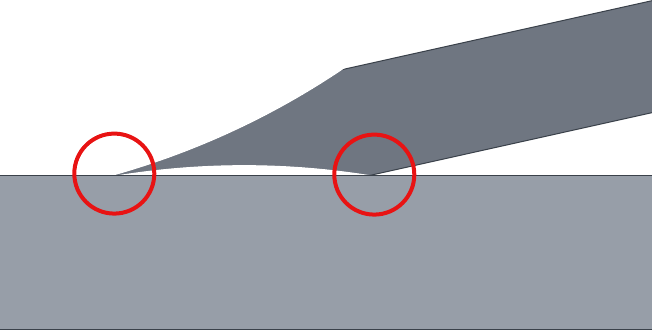

|
Oyster Knives
|
|

Edge Angles
Guidelines shown below are for Included Angles (α).
Green wood carving can use a lower included angle than when carving dry wood.
CB's USB Projection Calculator is recommended for calculating setup for Tormek knife jigs.
There are a number of online calculators that can also be used for sharpening knives.
Remember, it's never the knife's fault.
Daniel Boulud
|
General Guidelines
|
|
Type
|
α
|
Grind Profile
|
Notes
|
|
Chip Carving Knife
|
20°
|
Concave or Slightly Convex
|
Could be as low as 15° or 16° included angle, especially on softer woods.
The Scandi grind can be "grabby" on the wood when slicing into it. The micro-bevel grind does not cut as cleanly.
|
|
General Carving Knife
|
20°
|
(see below)
|
Could be up to 25° included angle.
|
|
Sloyd Knife
|
22 - 25°
|
(see below)
|
The angle can be smaller or greater, depending on your need.
The convex grind is preferred by some as it gives a radius from which to adjust the angle of attack. Others say differently. You will need to identify which you prefer.
Some versions of this knife do not have the same angle on each side (this is more common with those which are hand-made). This means the Bevel Angle (β) may not be 50% of the Included Angle (α).
It is advisable to use a Sharpie marker to ensure you are grinding the same angle as was delivered. Once you have achieved the angle that matches the grind, record it onto a label attached to the knife. This will enable you to repeat the grind easier next time (or at least make dialing it in faster).
|
Notes & Comments
Grind Shape & Experience
The shape of the grind used is a call best made by the tool's use, based on your own experience. Additional notes are available on separate web pages for Grind Profiles, and Micro / Secondary Bevels.

Using hollow grind points to set flat grind angle
Flat Grinds
If choosing to work with a flat grind, a hollow grind is a great start for helping to ensure easier work when using higher grit stones by hand.
When using flat stones for final sharpening (e.g., grits >2000), a hollow grind can make this easier. As shown in the picture to the left, the two points circled in red provide positive locations for setting the grinding action. It also reduces the amount of grinding needed as there is less metal meeting the grindstone.
More Information
Books & Papers
Videos & Presentations
- Tom Bartlett (Sharpening Supplies)
- How To Sharpen A Scandi Grind (YouTube video) - This video Tom discusses less about how to sharpen a scandi grind than a lot of tips on sharping this grind profile.
- Steve Bottorff
- Jeff Farris
- Hewn and Hone
- Dr. Vadim Kraichuk (Knife Grinders)
- Paul Sellers
- Herman Trivilino
- Tormek's Videos
|
- Tormek's Videos (continued)
- Tormek Live Sharpening Class - Part 9 - Sharpen a flat bevel with Tormek MB-100 on a diamond wheel (YouTube video). In this episode we learn how to use the Tormek MB-100 Multi Base to sharpen a completely flat bevel ▼, on the side of Tormek's diamond wheels DC-250, DF-250 and DE-250. For some tools, such as 🎻 luthier knives,🔪 Kiridashi knives, v-tools, chip carving knives and Japanese plane irons, a completely flat surface on the bevel is preferred over a slightly concave, which you get when you sharpen on the rounded part of the grinding wheel. For some people this is more of a personal preference.
Regardless of what might be the reason to want a flat bevel, Sèbastian and Wolfgang show how to achieve it with your Tormek wet sharpening system, They will also touch upon the differences between the different types of bevels.
- Tormek Live Sharpening Class - Part 10. Advanced knife sharpening (YouTube video). Wolfgang and Sèbastian from Tormek talk about advanced techniques for knife sharpening.
- Tormek Live Sharpening Class - Part 15. Repair a damaged knife (YouTube video). Wolfgang and Sèbastian from Tormek show you how you can repair damaged knife on your Tormek sharpening system If your knife has a chipped edge, a broken tip, or if it has started rusting, you can often repair the knife and make it as good as new.
- Tormek Live Sharpening Class - Part 24. KS-123 Knife Angle Setter (YouTube video)
- Tormek's Centering Knife Jigs KJ-45 & KJ-140 (YouTube video)
- Tormek Small Knife Holder SVM-00 (YouTube video)
- Tormek Knife Jig SVM-45 (YouTube video)
- Tormek Long Knife Jig SVM-140 (YouTube video)
- Tormek AngleMaster WM-200 (YouTube video)
|
Published Articles
- “Woodcarving” magazine issue #197 has a great article by Nic Westerman about sharpening sloyd knives.

 Click on either image for bigger size.
Click on either image for bigger size.
Images courtesy Todd Simpson
via Dr. Vadim Kraichuk of KnifeGrinders
- Research Articles, Other Information, and some Final Thoughts. Some key ones for this topic are below.
- If you want to get truly sharp, Dr. Vadim Kraichuk with KnifeGrinders has a really good method and has adapted the Tormek system to these wheels. The KnifeGrinder method is one that is proven, and has great tools to assist with making it easy.
- It is a common, but quite bad, practice of drawing the newly sharpened knife edge through a piece of wood or some other media to "rip off" the remnants of the burr. When this is done, the ripped off metal builds up on the front of the slice, and you then drag the rest of the edge through this crud. This crud, together with breaking off of ledges of material along the edge, will roughen the edge and worsen sharpness.
The scanning electron microscope (SEM) images to the right show the burr on a knife in the 1st image, that was then "ripped off" by cutting cross-grain into a piece of redwood in the 2nd image - loss of the sharp edge is obvious.
Key take-away from these photos : don't skip the honing step.
Web Sites
- Science of Sharp - a web site which uses “electron microscopy to physically observe the geometry and polish of the edge and to quantify the edge width and bevel angle. The goal is to provide an understanding of what is happening a the blade's edge. The centuries old design of a straight razor provides the ideal system for scientific study of sharpening.”